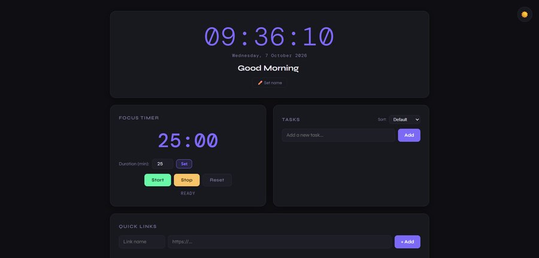
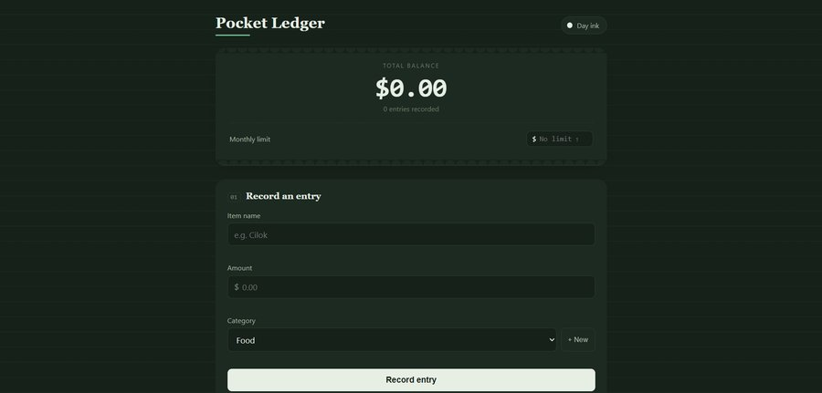
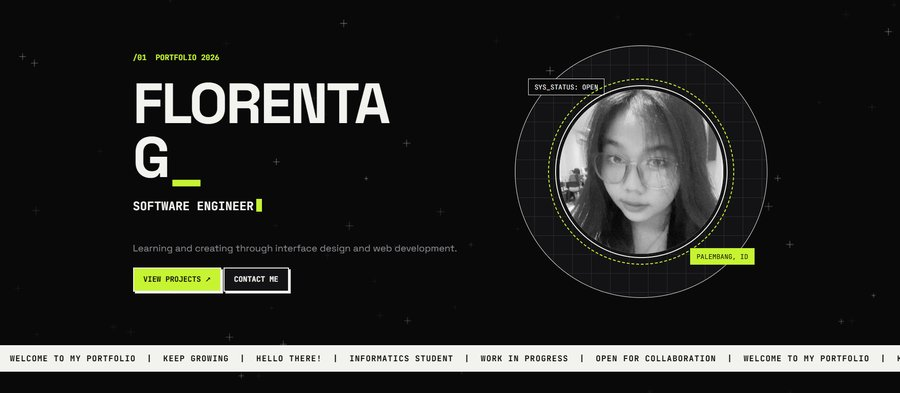
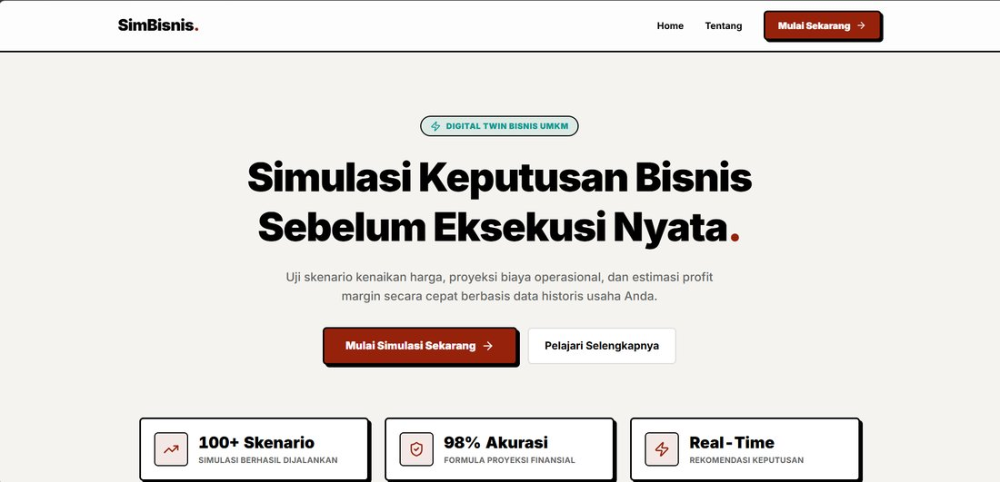

Focus_TimerFocus Timer
An interactive productivity dashboard featuring a real-time clock, Pomodoro focus timer, task manager, and quick links.
htmlcssjsView project ↗
Some of the projects and experiments I've created.

Focus_TimerAn interactive productivity dashboard featuring a real-time clock, Pomodoro focus timer, task manager, and quick links.
htmlcssjs
Pocket_LedgerA personal finance app for tracking daily expenses, setting monthly budget limits, and visualizing spending categories with charts.
htmlcssjs
PortfolioA multi-page personal portfolio built with semantic HTML and an external stylesheet, featuring a light/dark theme toggle, a typing text animation, an animated background, and a hover-activated profile photo effect.
htmlcssjs
SimBisnisSimBisnis is a business decision simulation tool for MSMEs that projects the impact of hypothetical choices and scenarios.
reacttailwind csssupabase